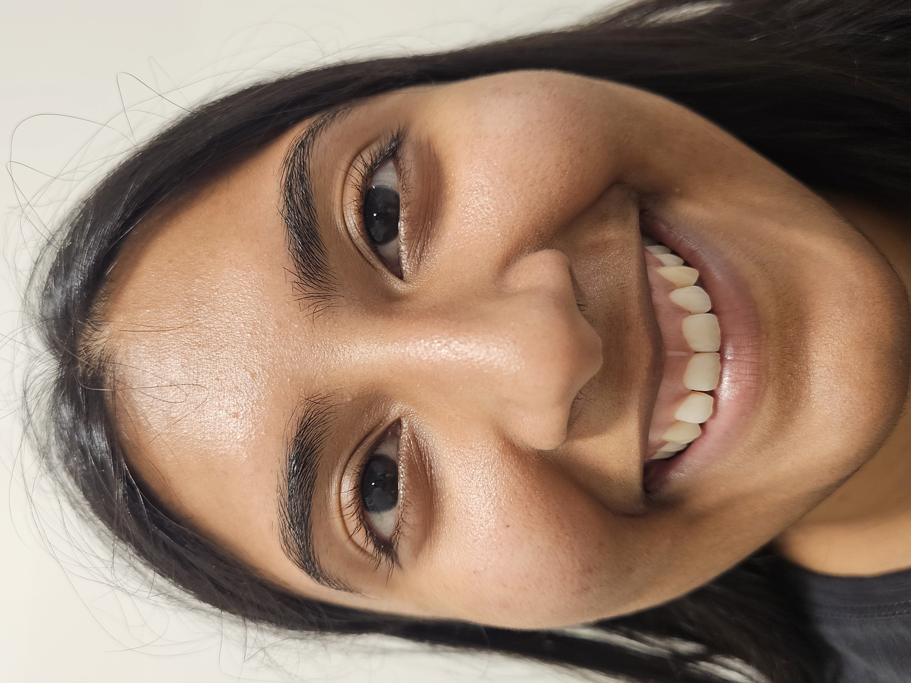
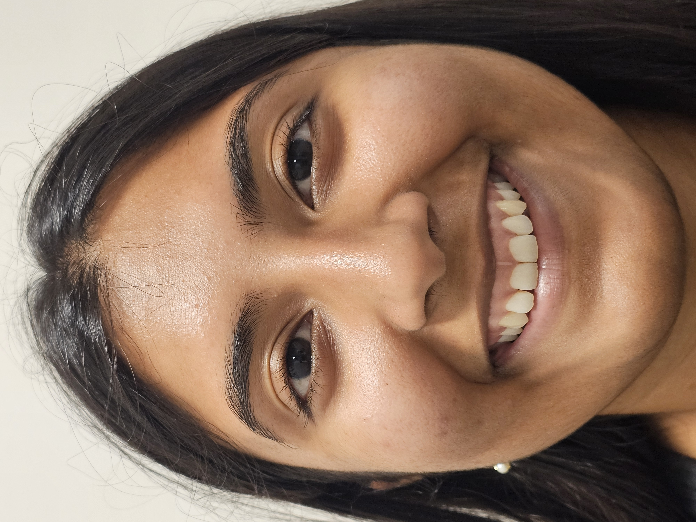
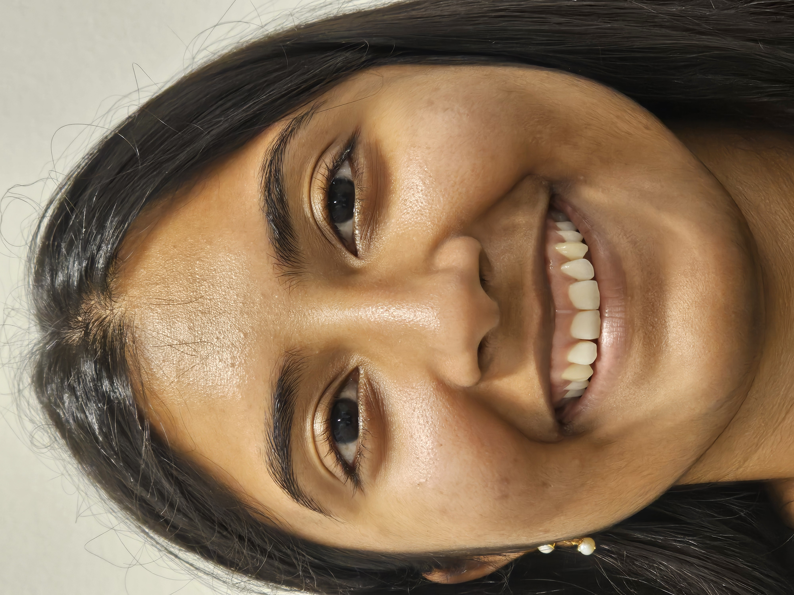
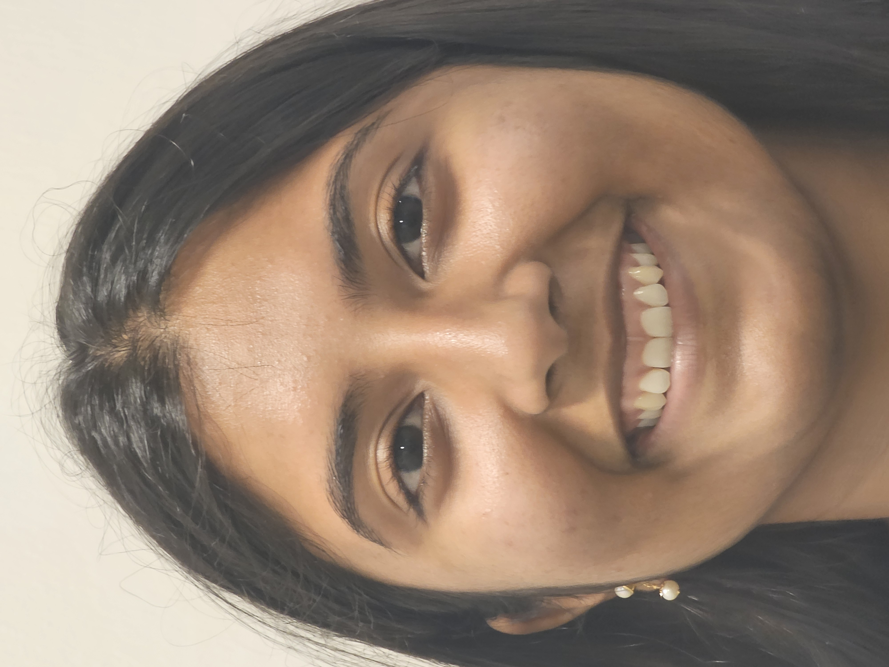
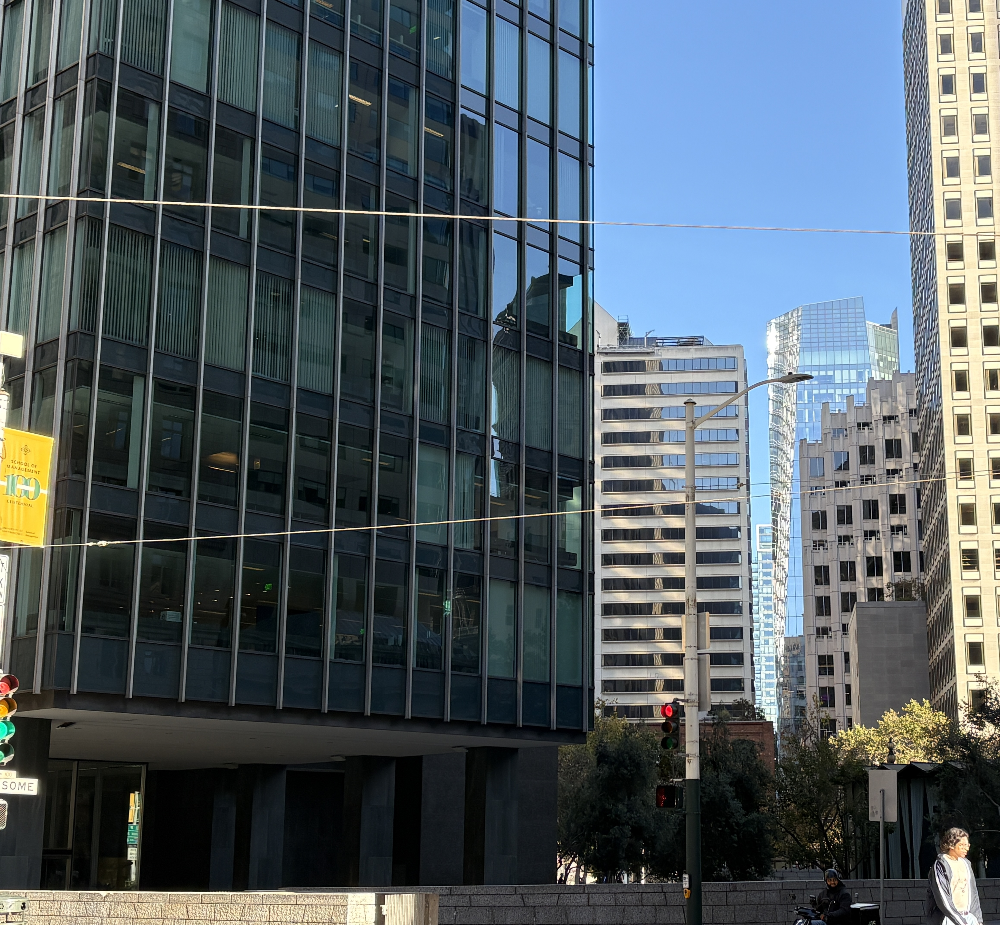
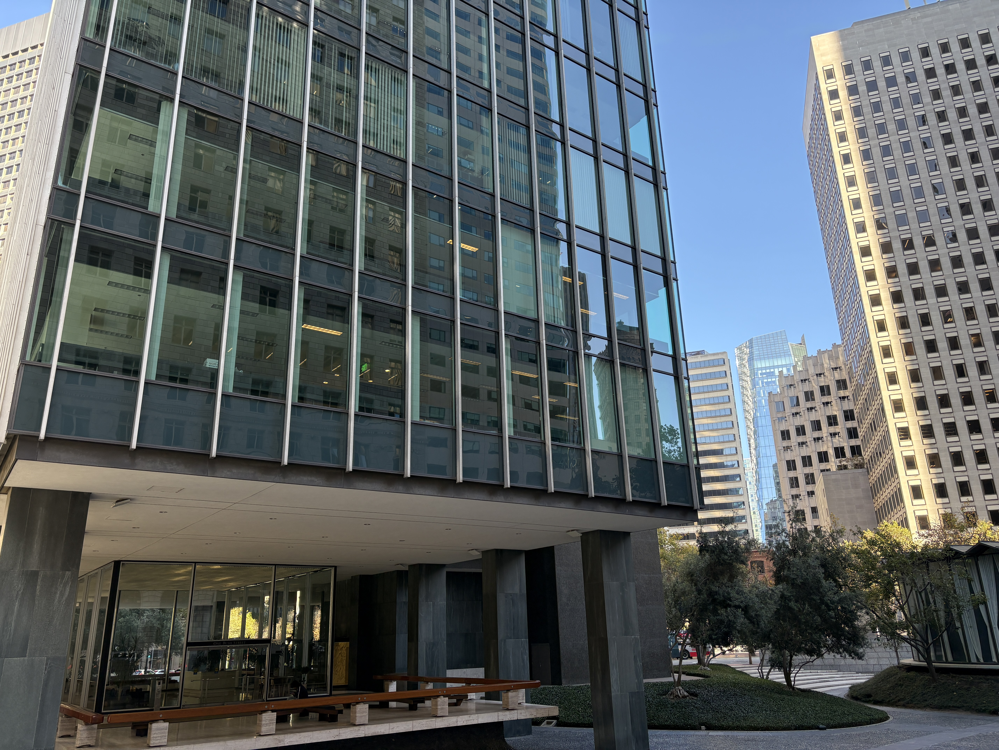

Project 0
Becoming Friends with Your Camera
A relationship between perspective, focal length/zoom, and the center of projection.
The Wrong Way vs. The Right Way
Below is a sequence of photos of me initially taken very close up and progressively farther away (but zoomed in to keep my face roughly the same size in each photo). When the camera is very close, facial features closer to the camera appear disproportionately large compared to facial features farther away. As the camera moves farther away, the distance between these features becomes small relative to their overall distance from the camera. This reduces perspective distortion and makes my facial proportions appear more natural.




Architectural Perspective Compression
Here are two photos taken in the Financial District in San Francisco. In the first photo, I stood farther away and zoomed in. In the second photo, I moved closer to the glass high-rise on the left and used no zoom. From farther away, the buildings in the foreground and the background appear to be closer in size, making the picture look flattened. When I move closer, the glass high-rise to the left appears much larger relative to the buildings behind it, giving the scene a stronger sense of depth. This happens because of perspective distortion - when the camera is closer, differences in the distances of the buildings to the camera have a greater effect on their size in the photo.


The Dolly Zoom
I recreated the dolly zoom, a popular cinematic effect used in films like Alfred Hitchcock's Vertigo. I slowly moved the camera backward while zooming in so the David protein bars stayed roughly the same size in each frame. Moving backward changes the perspective of the scene, while zooming in prevents the bars from appearing smaller. As the camera moves farther away, the background looks more compressed, creating the dolly zoom effect.